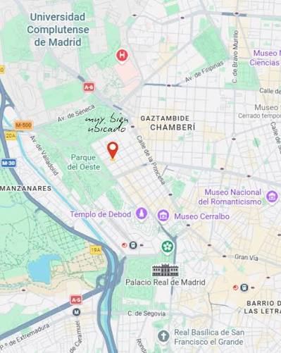

Tanto la IE, como ICADE como el CEU permiten conseguir una titulación en Adminsitración y dirección de empresas. A pesar de que el objetivo final sea el mismo, no tdas duran lo mismo, ni se imparten en el mismo idioma ni en el mismo ambiente.
Además, las salidas laborales varían, ya que durante la carrera las unviersidades permiten acceder a distintos puestos de trabajo que ya es decisión del estudiante si quedarse o buscar otro más general.
De la misma manera, aunque las 3 sean privadas, la manera de acceder varía, al igual que los requisitos antes, durante y después del periodo universitario
El campus de ICADE está integrado en el centro de Madrid, con un modelo de campus urbano repartido en varias sedes y edificios históricos y modernos, en lugar de un único campus aislado a las afueras.

| Ciudades | Descripción | Explora | |
|---|---|---|---|
| Madrid | La IE Tower, el campus vertical donde estudian los alumnos de grado, y María de Molina, hogar de la mayoría de los programas de máster. Ambos se ubican en el centro de una de las capitales de negocios más activas de Europa, de modo que la ciudad misma se convierte en parte del aula. | Explora el campus | @mdo |
| 2 | Jacob | Thornton | @fat |
| 3 | John | Doe | @social |
El campus de ICADE está integrado en el centro de Madrid, con un modelo de campus urbano repartido en varias sedes y edificios históricos y modernos, en lugar de un único campus aislado a las afueras.
.accordion-body, though the transition does limit overflow.
| # | First | Last | Handle |
|---|---|---|---|
| 1 | Mark | Otto | @mdo |
| 2 | Jacob | Thornton | @fat |
| 3 | John | Doe | @social |